Hausdorffsche Umgebungsaxiome
1. Satz / Definition
Ein topologischer Raum ist ein Paar 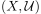 bestehend aus einer Menge  und einer Familie
und einer Familie  von Mengen (Umgebungen von
von Mengen (Umgebungen von  ) von Teilmengen 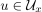 , 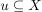, so dass gilt:
) von Teilmengen 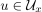 , 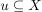, so dass gilt:
- Jede Umgebung von enthält
- ist eine Umgebung für

- Sei
 eine Umgebung von und 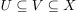, so folgt, dass
eine Umgebung von und 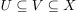, so folgt, dass  ebenfalls eine Umgebung von ist
ebenfalls eine Umgebung von ist - Der Durchschnitt von zwei Umgebungen eines punktes ist wieder eine Umgebung von (vgl. Abgeschlossenheit des Umgebunggsystems unter Durchschnitt)
- Jede Umgebung von enthält eine Umgebung von , welche Umgebung jedes seiner Punkte ist
2. Beweis
2.1. Topologie  Umgebungsaxiome
Umgebungsaxiome
- folgt aus der Definition von Umgebung
- folgt aus den Mengen in einer Topologie, da offen ist
- folgt aus der Definition von Umgebung: Es existiert eine offene Menge
 mit 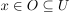; damit gilt dann auch 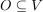
mit 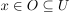; damit gilt dann auch 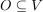 - folgt aus der Abgeschlossenheit des Umgebunggsystems unter Durchschnitt
- folgt aus der Offenheit und Umgebung aller Punkte
2.2. Umgebungsaxiome Topologie
2.2.1. triviale Mengen in einer Topologie
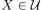 folgt daraus, dass nach Annahme Umgebung aller Punkte ist.
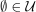 folgt nach Definition ebenso.
2.2.2. Vereinigung offener Mengen ist offen
Sei  eine Familie von offenen Mengen nach unserer Definition.
Dann ist 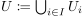 ebenfalls eine offene Menge:
Sei
eine Familie von offenen Mengen nach unserer Definition.
Dann ist 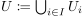 ebenfalls eine offene Menge:
Sei  beliebig, so existiert ein
beliebig, so existiert ein  , so dass eine Umgebung von ist.
Nach 3. folgt, dass 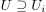 ebenfalls eine Umgebung ist.
Daraus folgt, dass
, so dass eine Umgebung von ist.
Nach 3. folgt, dass 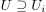 ebenfalls eine Umgebung ist.
Daraus folgt, dass
2.2.3. Offenheit des endlichen Schnitts offener Mengen
o.B.d.A. für 2 offenen Mengen, der allgemeine endliche Fall folgt durch Induktion:
Seien 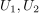 offene Mengen, so gilt für 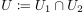, dass ebenfall soffen istwa
Sei beliebig, so sind Umgebungen von und es folgt, dass ebenfalls eine Umgebung ist.
Damit folgt, dass Umgebung aller Punkte ist und somit offen ist.